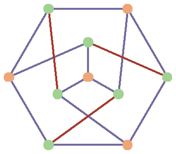
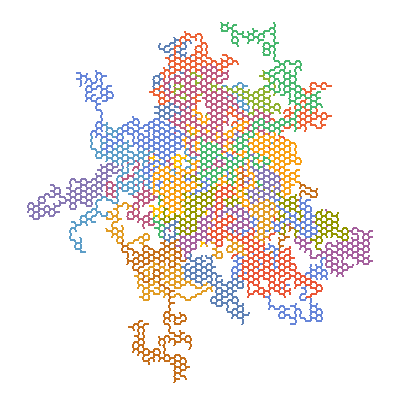
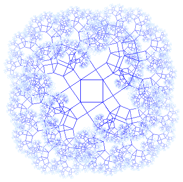
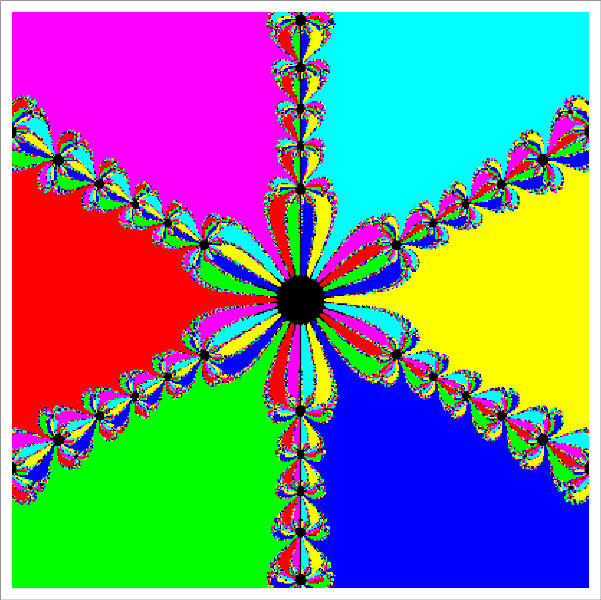

Teaching Curriculum Vitae (PDF)
This page is meant to act as a description of my teaching interests and of my broader thoughts on math education, both of which are inextricably linked. Near the end of my undergraduate program I decided to make it my life goal to leave the math education system better than I found it. Like anyone, there are a great many causes that I believe in and would like to help with, but math education is the one area where I am actually in a unique position to affect some positive changes. Plus, I genuinely enjoy teaching mathematics and putting together presentations to show people, as should be clear from the number of Mathematica demonstrations I have made in my free time.
Most of this page is devoted to an essay explaining what I think are the biggest problems with math education today and offering a few suggestions for how things could be improved. This is targeted mostly at other math educators, but I would hope that it can provide some insight for a general audience.
As will be explained below, most of the problems that I wish to address in the math education system are related to how students are introduced to university-level mathematics. For this reason, most of my teaching interests revolve around these introductory courses, notably the calculus and differential equations series'. That being said, based on my areas of interest and expertise, there are also plenty of advanced courses that I would love to teach. My biggest interests include the following:
Not all of these courses are offered by every university, but I am more than willing to help the department to design new courses if there is sufficient interest. I am also a big believer in the importance of educational outreach. As an undergraduate I had the opportunity to participate in the Science is Fun program where I traveled with a team to perform hands-on science presentations for local elementary schools. I would love to see about participating in or organizing educational outreach for mathematics, as well as helping out however possible with any university math clubs.
My goal here is to outline some of the problems that I see in modern math education. I would like to make clear upfront that I do not think that these problems are in general the faults of math teachers, or even of any individual institution. Nor do I think that they are the faults of the students, themselves. Rather, I think that the many actions of many individuals due to many pressures over a long period of time have caused the standard math curriculum to slowly drift to its current form which almost seems as though it was designed with the express purpose of turning students off of math. I should also mention that the issues I am about to discuss are not unique to math classes, but they are more obvious there, which is why I feel they are especially worth discussing.
Math hatred permeates our culture. According to a 2005 Ipsos survey of adults, math is by far the most hated of all elementary school subjects. Mutual hatred of math classes is often taken as a point of solidarity among adults for whom their primary associations with math classes are boredom, detachment, and maybe even anxiety. Most people have an extremely limited understanding of what an unimaginably broad and varied subject math is, and many assume that it just consists of crunching numbers and solving equations. Any professional math educator should be able to look at these outcomes and conclude that we can do better.
For a career mathematician or someone in a math-adjacent field like physics or computer science, these feelings may seem mysterious since, for them, math cannot possibly not be interesting. After all, it is the language of nature and it lies at the foundation of all of our scientific and technological achievements. It is at once the study of natural patterns and of the farthest reaches of our imaginations. It allows us to understand the fundamental interconnectedness of all things both real and imagined. If you like anything about the modern world then by the transitive property you should like math, right?
Clearly not, and if you are a math educator, you have a duty to ask yourself why. Certainly personal tastes are a thing, and it is entirely possible that some people just intrinsically like math while others do not and never will, but I find this to be an unsatisfactory explanation that allows for no recourse on the part of the teacher. Moreover, it does not address the issue of why so many people have such a limited understanding of what math even is.
I must acknowledge that math hatred, while prevalent, is also certainly not universal. Some students truly love it and excel at it, and it is important for them to have professors willing to put in the time to allow them to reach their full potentials. However, it is also important to take common complaints about math courses seriously. Many students feel that these courses are boring, useless, have no bearing on reality, and that they will never need to actually understand it for their careers. Those are perfectly valid complaints that deserve to be addressed.
My feelings on math education are fairly well encapsulated by this quote by Edward Frenkel:
What if at school you had to take an 'art class' in which you were only taught how to paint a fence? What if you were never shown the paintings of Leonardo da Vinci and Picasso? Would that make you appreciate art? Would you want to learn more about it? I doubt it. You would probably say something like this: 'Learning art at school was a waste of my time. If I ever need to have my fence painted, I'll just hire people to do this for me.' Of course, this sounds ridiculous, but this is how math is taught, and so in the eyes of most of us it becomes the equivalent of watching paint dry. While the paintings of the great masters are readily available, the math of the great masters is locked away. — Edward Frenkel, Love and Math
That is to say that math education is front-loaded with the most boring material possible, which causes most students to get bored and leave the subject before they reach the good part. When they do leave, their view of mathematics is so limited that they naturally assume it's all just more of the same number crunching and basic algebra, and they never get to see the truly bizarre and amazing parts of math that have nothing to do with numbers.
In addition to the early math material, itself, being extremely dull and limited, it is also generally taught in an extremely dull way. Most early math courses are taught mechanistically with students learning specific methods for dealing with specific problems and very little else. This results in students whom are very good at computations but not necessarily good at approaching real-world problems or applying the course's general principles to anything that does not look exactly like what they have been shown before. To be clear, this is not necessarily the faults of the instructors: they often have an extremely strict syllabus to stick to which leaves very little room for innovation. Likewise, even if their department were willing to change the syllabus, they are often locked into it since so many early math courses are prerequisites for other things and thus cannot easily undergo significant scope changes.
While it is true that the primary focus of many math courses is to provide students some specific tools to deal with specific problems (like numerical methods for solving differential equations), there are also a lot of unstated goals of early math courses that tend to go neglected. Within a rounding error, nobody will ever need to differentiate a product of trigonometric functions by hand in their career or their everyday life, but everyone can benefit from the general skills that math classes impart. Things like pattern recognition, constructing solid arguments, knowing good questions to ask, knowing how to read a chart, and figuring out how to approach abstract problems are all important life skills and should be treated as major objectives of every math course, particularly early on. While most people will never need to write a proof by contradiction after finishing school, the ability to go through the thought exercise of assuming something to be true and then seeing where it would lead is very useful for assessing the validity of claims or for empathizing with someone with different lived experiences. These kinds of soft skills are more important now than ever in a post-truth world where politicians and businesses regularly prey on the average citizen's inability to interpret numbers or see through insubstantial arguments.
A lot of what I am saying here may ring hollow for math majors, and it may seem unusual that someone in my position would even be talking about it. Clearly I was not lost to the field of mathematics in the way that I described above since I was one of the students that stuck around long after the "boring" parts. However, I believe that I can still speak with some authority on the issue of students being driven away from math because that is exactly what happened to me as an undergraduate.

I changed major several times as an undergraduate at Arizona State University. I initially started in the Civil Engineering program taking the purely methods-based engineering sections of most mathematics courses. After my second year I was feeling a bit burnt out on math and decided to switch to Geology, but not wanting to let my math courses go to waste I had also added a Mathematics minor. I felt that Geology also wasn't for me, and so eventually I switched to the recently-founded Applied Mathematics for the Life and Social Sciences program.
Initially I had joined the program for purely pragmatic reasons. I did not feel that I had any intrinsic love for mathematics, and I did not (and still do not) like dealing with numbers, but I felt that having a math degree could potentially set me up for a large number of careers since it is involved in so many different fields. Fortunately for me, though, the program turned out to be really interesting, largely due to its focus on mathematical modeling which provided a good excuse to explore a wider variety of math topics than I would have ever seen otherwise.
My most significant change in perspective came when I finally took a course in graph theory at Illinois Institute of Technology (incidentally taught by my future advisor, Hemanshu Kaul). Although I had been fortunate enough to see a lot of different parts of mathematics by that point, everything that I had seen up until then had dealt with numbers and functions and the like, and so I kept waiting for the day of the course where we would start calculating things. That day turned out to be never because, as I eventually learned, there are large parts of mathematics that revolve around the study of structure rather than quantity. This happened to coincide with the point in my life when I discovered a lot of really great math channels on YouTube like Numberphile and Vihart that show a wide variety of interesting topics in completely novel ways. All of these elements conspired to make me realize that my former view of what math was had been completely misinformed.
Since that point I have made it my personal goal to learn as much as I can about as many different fields of mathematics as I can. This was the motivation behind a large number of my Mathematica demonstrations and other programs. It is also one of the major reasons why the topic of math education is so close to my heart. I got lucky and discovered quite by accident that math is actually cool, but I would rather live in a world where luck is not required.
The problems described above were not caused by a single person and they cannot be solved by a single person. In order to truly solve them we would need to completely rebuild the entire educational system from the ground up. Any significant structural change to the math program would require the support of the entire department. That being said, there is still plenty that an individual teacher can do within their classes to try to overcome them.
Of course a big part of being a good teacher comes down to personal teaching style and ability to do things like create illustrative examples, cater to a variety of learning styles, and promote an environment of inquisitiveness and curiosity. These sorts of skills come from experience and important for teachers in any subject, not just mathematics. In order to offer some more specific suggestions for math education in particular, I would like to present some relatively simple shifts in focus that I would recommend any math teacher consider. These are techniques that I have attempted to cultivate based on my own experiences while teaching, and are meant to address the student disengagement issues discussed above.
I must also give credit to Math Pickle, a brilliant educational resource which provides a wide variety of math puzzles for use in K-12 classes. A presentation by its founder, Gordon Hamilton, was a great source of inspiration for me and informed much of the following section.

At the risk of sounding hyperbolic, pretty much every class in every field at every academic level is entirely too reliant on exams. Exams are convenient for teachers since they are easy to administer and evaluate, but for students they are often a source of boredom and anxiety. In addition, exams are so unlike anything that anyone will be asked to do in their everyday life or their career that they seem very obviously artificial, which is why a common complaint among students is that school is a useless waste of time. These problems exist in every field, but they are especially pronounced in math courses, and they are exacerbated when combined with the seemingly endless drills that students are made to do as homework.
The material in math classes is often presented in a contextless void with no mention real-world applications, and it is usually presented in a way that places mathematical rigor at the forefront. Rigor is certainly an important part of mathematics, and it is necessary when doing something that needs to be very exact like performing numerical calculations or writing a proof, but placing so much focus on it so early in math education leads to the perception that math is rigid and harsh. For many students the combination of a strict time limit and black-and-white, right-or-wrong questions with no room for error leads to math anxiety. If you are a math educator, the fact that there is a specific type of anxiety named after your field should tell you that something has gone horribly wrong.
Not only that, but placing so much focus on exams also completely misrepresents what mathematics is. While rigor is a big part of it, so are imagination and creativity, and the latter two are especially important for open-ended real-world problems that have no definite solution. In operations research, especially, many common problems are practically impossible to solve exactly, but being able to come up with a "pretty good" solution quickly is often sufficient. A large part of mathematics is also about explaining and justifying one's ideas, coming up with good questions to ask, and being able to approach problems in an organized way.
Shifting the focus of the class to projects helps to alleviate these issues, and mathematical modeling in particular provides an excellent source of projects. While it is true that pure math results are valuable on their own merits, being able to tie mathematics to the real world is a much easier motivation for most non-math majors to connect to, especially early in their academic careers. This is admittedly easier to do for some subjects than others, but a good place to start is to look into the history of the subject to see why it was originally developed. For example, calculus has very strong connections to physics, and through optimization and differential equations it can also be connected to a huge variety of other practical problems.
Projects also help a lot with the "contextless void" problem mentioned above. Homework is often presented in the form of a page full of drills for completing the same type of hand calculation over and over. Suppose instead that the student is given an open-ended project that involves performing that same type of calculation as a subproblem, and that through their own experimentation they will have to perform that calculation repeatedly. This accomplishes the same skill-building goal as the set of drills, but now the problem instances have been developed by the student, themself, in the context of a greater purpose.
Going back to calculus, a common type of drill that students are often made to do is evaluating a large number of derivatives by hand. Suppose, instead, that they are presented with the problem of finding a function whose derivative satisfies certain properties (which is actually a perfectly practical problem, since conditions on rates of change are where a lot of differential equations-based mathematical models come from). Assuming that they have not yet covered integration, their only real approach will be to simply try experimenting with test functions that they come up with, evaluating their derivatives to check whether they satisfy the given properties and modifying their attempts based on the results. This gives them the same practice that the drills would, but now it is in service of solving a puzzle instead of simply chipping away at a wall of arbitrary tasks. This also has the added benefit that, if a student has a good enough intuitive understanding of derivatives to come up with a solution very quickly, they will be rewarded for their understanding by getting to skip a lot of tedious busywork.
Open-ended projects or projects with no known solution are even better, since this is more often how things are in the real world. I advocate the adoption of more of a punk rock attitude towards mathematical modeling. For any given practical problem there is no "right" way to approach it, and it is important for students to think creatively and to have a broad mathematical basis from which to pull ideas. It is important to loosen up and be prepared to try a bunch of different things. Some will work and some will not, but it is okay to get things wrong, especially if the given problem has no known or definite solution. Real mathematicians get things wrong all the time before finally coming up with the final version of their work. Mathematical modeling consists of using whatever tools are available to kludge together something that works after a long series experiments and failures. To present mathematics as a series of tasks which must be performed in a set way and perfectly every time is to leave students with an unrealistic view of professional mathematics.

Most teachers dread being asked questions like "Will this be on the test?" and "Why are we covering this?". They tend to be asked when the student feels that they are being put through a bunch of useless busywork. However, they do deserve honest answers. The students' time is valuable, and they deserve to know why they are being made to do the various tasks required by the class. They are right to feel upset if a class is wasting their time. As a professor it is helpful to have a healthy bit of cynicism with regard to the course syllabus and the entire school system, in general. A lot of course requirements are, indeed, kind of a waste of time, and pretending that they are not will alienate a lot of students.
It is easy for students to become suspicious about a course's value when it covers material that is blatantly contrived, artificial, or simplistic, and yet is still presented as if it were a "real" application. A lot of topics from mathematics courses are disingenuously presented as things that a student might need to do in their life or career. This is usually unintentional and arises from well-meaning uses of story problems to concretely illustrate abstract concepts. For example, a common trigonometry story problem involves describing a ladder leaning against a wall to form a triangle and using some of the angles and dimensions to calculate others. This type of problem is simply meant to give the student something to visualize while they work their way through the basic concepts of trigonometry, but it is also obviously not something that any person would actually need to do in their everyday life or career. If these types of nakedly impractical examples are the only applications that the student is ever shown, they may easily conclude that there are not really any applications after all.
This is not to say that artificial or simplistic examples should never be used; on the contrary, they can be very helpful when introducing a new concept. However, it is important to be upfront about the fact that these are just toy problems being played with for illustration or practice rather than actually being the end goal. Otherwise it is easy to give the impression that mathematicians are just a bunch of insane people who don't know anything about what happens in the real world.
In light of this, it can be helpful to make a point of showing students what each topic is actually used for in real life, even if its real applications seem to be prohibitively complicated or indirect. The students might not understand every aspect of the application, but simply seeing that it exists can be incredibly valuable. This can be done by taking some class time to skim through a recent research paper or an engineering project that makes use of a concept from class. Doing so would also help to give a more accurate picture of what professional math work is actually like. Relative to what students are made to do in class, it tends to have a very big focus on writing and explaining, it can be very messy and impure, and for many modern problems it is not possible to get an exact answer.
For some branches of math this kind of demonstration is easy. For example, differential equations appear extensively throughout physics, and so pretty much any modern paper from physics or mechanical engineering can be presented as an example. For other branches this can be difficult. This is particularly an issue for early university subjects (like calculus) which exist in the awkward position of being too technical to appear in everyday life but too simple to be used, alone, to solve most modern research or engineering problems. Be upfront about this fact, as well. Plenty of subjects are not necessarily very useful on their own but they often appear as a small part of a larger problem, which is why it is still useful to understand them.
We begin our mathematical careers by learning how to do basic arithmetic by hand. This is a valuable exercise and it gives us a better base-level understanding of how numbers interact with each other. However, by the time we are ready to move onto more advanced concepts like elementary algebra and trigonometry, doing these calculations by hand every time would become prohibitively time-consuming. We then start to use calculators to perform numerical operations instantly in order to free up our minds for higher concepts. This allows us to move on to doing more complicated things by hand, like solving equations and plotting functions, and these exercises are similarly valuable. Again, at the point where continuing such tedious operations by hand would be prohibitively time-consuming, we may move on to using graphing calculators in order to graduate to more advanced topics like calculus.
This trend should have continued when computer algebra systems like Maple and Mathematica started to become more readily available to students, but progress in this area has been slow. Many calculus classes now include a computer lab, but most of the student's work (between homework, quizzes, and exams) is still done primarily by hand with nothing more than a graphing calculator. Considering that we now live in an age where almost everyone walks around with a tiny computer in their pocket at all times, this approach seems a tad archaic.
The availability of systems that can evaluate derivatives and integrals and that can solve differential equations should have freed students to explore more of what math has to offer. They should have been able to start spending less time going through endless drills in calculus and differential equations classes and more time looking at interesting applications or more advanced concepts. This would also make it easier for students to begin focusing less on calculations and more on qualitative behaviors of systems in order to gain a deeper understanding of the subject. The issue of limited time that keeps so many students in the dark about the vast breadth of mathematics should have begun to recede. Unfortunately these tools, along with the fantastic opportunities they represent, have largely been left out of the classroom.
The students, themselves, are clearly aware of these technological advancements. Tools like Wolfram Alpha, which can be used to instantly solve many homework problems and even show step-by-step solutions, are only going to become better and more readily accessible. Whether you think that this development is good or bad, it is the world we live in now, and as teachers we have two options: try to resist it by hiding these tools from students, or try to turn it into a positive by embracing it. I say we turn it into a positive.
I agree that having students go through a few drills is important, since going through a mechanistic process a few times teaches the student more about what is really going on at a fundamental level. Most classes go way overboard with the drills, however, which is a contributing factor to the math hatred discussed above and the undesirable outcome of students learning nothing more than a list of specific methods for dealing with specific problems. In addition, it is quite disheartening as a student to know that the tasks you are being made to perform could be done instantly by a computer, and it raises the perfectly valid question of why they are even bothering to spend so much time on it.
There is a trope that most professional mathematicians are not very good at everyday math like basic arithmetic or accounting. Mathematicians that experience these issues generally attribute it to the fact that they simply don't do very much basic math by hand as the result of working primarily with more advanced or abstract concepts and using computers for simple tasks to save themselves work. They are too busy doing what a mathematician's job really is, which is to come up with ideas and think through them, not to crunch numbers by hand. The reason why they can get away with this is because, in any reasonable situation where they might need to do some advanced math, they will almost certainly have access to a computer.
For these reasons, I strongly advocate for shifting the classroom focus from drills and hand calculations to higher-level thought. Projects can help with this, as can interactive demonstrations. It should also be considered a priority to inform students how to use these computational tools, since they will only become more necessary as we advance further into the information era.

I would like to close on a more pleasant note. For as much time as I have spent emphasizing the importance of applications, not everything needs to have a practical purpose. Different students will find different things motivating, and while some will only see studying math as being worthwhile if they can be convinced that it is "useful", others may respond to the notion that math can be fun and beautiful and fascinating purely for its own sake. As a teacher, it is important to address both of these perspectives. Many professional mathematicians, when asked what it is that they like about mathematics, reply that they see math as all being puzzles and games. For me, personally, one of the best things about mathematics is the fact that the serious, hardcore math required to solve important real-world problems so often coincides with silly things that seem like they should just be for fun. For example, graph coloring problems seem like an activity from a children's puzzle book, but they are also a natural way to tackle many practical problems like scheduling.
Math teachers should not be afraid to take a few minor detours outside the scope of the course. It is important to let students know that there are interesting things for them to look forward to after the current class is over, like fractals and chaos and non-Euclidean spaces. If a student becomes interested in learning more about mathematics out of pure personal interest then they will have the motivation to put up with the more tedious parts of their courses, and they may even go on to continue learning informally after they finish school. If not, then they will more likely go on to remember their math education as a boring waste of time.
To pick on calculus one last time, it is very frustrating to me how often there are interesting things sitting right next to the course material that are never discussed, even though doing so would only take a couple of minutes. The discussion of related rates would be the perfect time to talk about the square cube law and its implications for biology and engineering. The discussion of limits would be the perfect time to introduce fractals, since a lot of their unintuitive properties (like having infinite perimeter or zero area) can be found quite easily using techniques from basic calculus. Taylor series provide the perfect place to talk about Euler's identity, which many mathematicians will tell you is the most beautiful relation in all of mathematics. While discussing Newton's method there is a great excuse to show off the unexpected fractal basins of attraction that occur in the complex plane. The optimization and differential equations units from calculus could be fantastic gateways into those fields, both of which are incredibly deep and varied and include fascinating topics like genetic algorithms and chaos theory. At its best, calculus can act as a student's first introduction to a wide variety of truly novel concepts that they would never encounter in any other field, but this is an opportunity which is consistently and tragically wasted by keeping too closely to the methods-based goals of the syllabus.
It is admittedly difficult to find time to include anything from outside the course given the often stringent limitations of the syllabus, but for the reasons discussed above, I believe that showing off cool stuff should be considered an important priority of the course alongside the official topics. Doing so can be easier than you may think. If you have already resigned yourself to covering a topic "just for fun", then you can absolve yourself and your students from having to go through all of the background steps required to get to the good part. The full rigor can come later if the student decides to study the topic formally, but they will never make that decision unless they are given reason to believe that there is more waiting for them beyond the confines of the course.